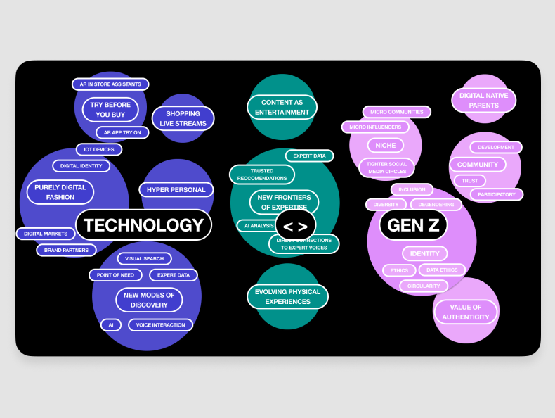
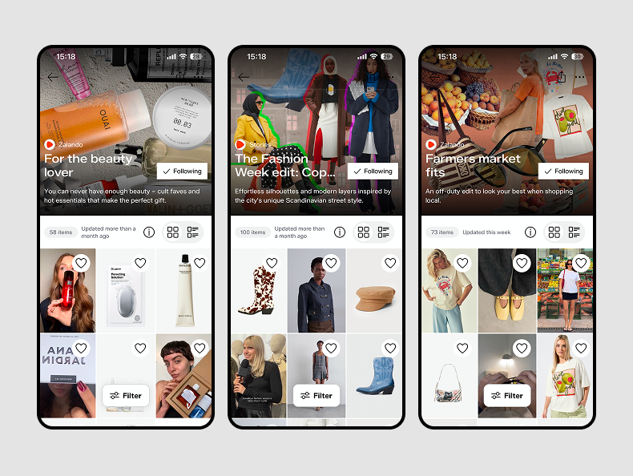
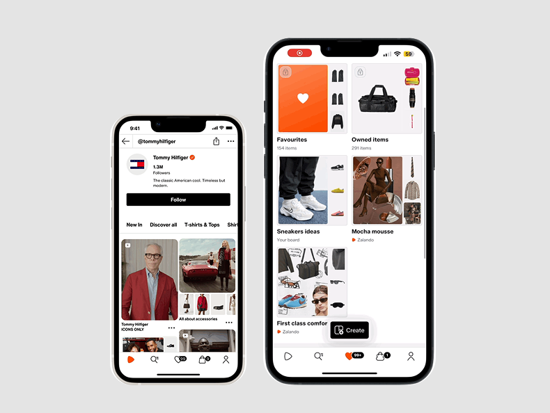
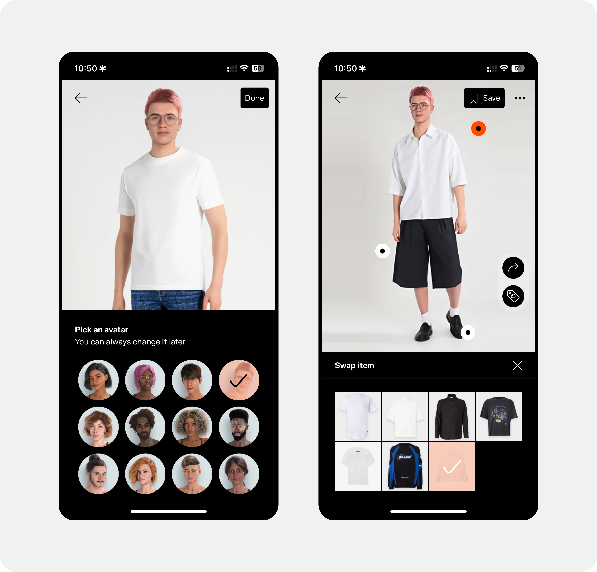

01 Case Study
Evolving Zalando's CX
Two months into my tenure, I was appointed to spearhead Zalando's 5-Year Customer Experience Strategy — redefining the company's market position for 2028 and acting as the primary bridge between executive business goals and design strategy.
The Mandate & Challenge
Building a future-proof vision for a system I was still learning
I had to build a future-proof vision for a complex ecosystem while still onboarding into it — and navigate a strict NDA that prevented traditional bottom-up crowdsourcing. The work demanded moving from speculation to a concrete North Star that leadership could rally behind.
Approach
From ambiguity to aligned, operationalized strategy
-
1
From ambiguous to consensus
Used strategic foresight and market research to build a decision-making framework, forcing SVPs to align on Business Probability vs. Strategic Advantage — landing on three core pillars: high-fidelity inspirational experiences, GenAI integration, and AI opportunities.
-
2
Accelerating through partnerships
Onboarded two design agencies as strategic agitators, defined the creative guardrails, and managed a €109,200 budget to produce three "Sacrificial Concepts" that moved the Board from hypothetical buy-in to tangible investment.
-
3
Shaping the strategic narrative
Acted as Creative Director with a motion agency to produce three vision films — crafting a narrative arc that was provocative yet grounded in feasible tech. These became the cornerstone of the 2024 Markets Day press release.
-
4
Operationalizing the vision
Once the NDA lifted, I led change management — forking the secret strategy into a 20-designer workstream alongside three other Heads of Design, and mentoring teams to preserve the original strategic intent during execution.

Problem → Solution
Turning strategic pillars into shipped experiences



Final Results
From a vision to a tested, rolled-out app experience
+12.3%
Stock price increase following the 2024 Markets Day strategy share-out
620k
Weekly active users on Inspiration Boards
400k
Social profiles created
9
New surfaces shipped across the app in 2 years
Learning
Leadership isn't about having all the answers — it's about building the infrastructure and clarity that allows a 7,000-person company to move as one.